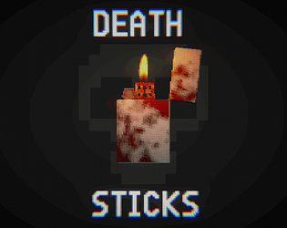

DEATH STICKS

This game was made for the MigJam game jam and focuses on mental health, addiction and smoking. It's a linear experience with few if any choices. The player is placed in a maze like environment with one goal, to obtain cigarettes and escape with your life. The game had a large boss fight planned and mostly finished but due to a power cut i've lost both the recordings and build of the game featuring this. The game features voice acting from my friend PxlDev/Mika and a trailer created by me.
You can play the game at my itch.io page: bigmemerman1.itch.io